Every window of Crake, captured from the app in both themes with its demo data, read against DESIGN.md and the screens by two independent assessments and by me. The app reads as Crake. The sentence per decision with its reason and its Undo is the thing no other VPN client has. The two-stroke tick carries from the tray to the chart, the log and tunnel detail. The voice holds in every window. First run, the leftover notice and New tunnel’s three steps need nothing.
What drifts is small: teal doing work that isn’t a decision, red at rest, a few places where the app slipped from its own screens, and copy. One window changes its structure, Traffic. The rest is polish. Below, before is the app today and after is a screen or a proposal page with the change, drawn by a different engine and often from older sample data; each caption says what else differs, so you judge the change, not the rendering. Click an image for its full size.
The graph paints every tunnel’s packets teal and every tunnel’s dot in the table, so there teal means “through a tunnel”: the meaning the strip under it gave up on 2026-10-15, and the loudest element in the app. After: the packets keep moving as they do today, at the path’s rate, but in grey on every way; a two-stroke tick sits before each destination Crake learned (pinned and full-tunnel destinations stay unmarked) and in the table instead of a dot, so the strip’s tick, the graph’s and the table’s mean the same thing. “Goes” becomes “Way”, the window’s own word, and names take the leftover width. The two images move: four seconds of the app, and the proposed graph animated the same way.
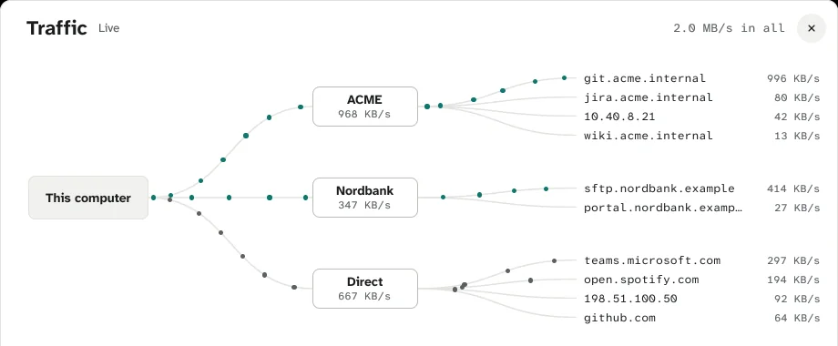
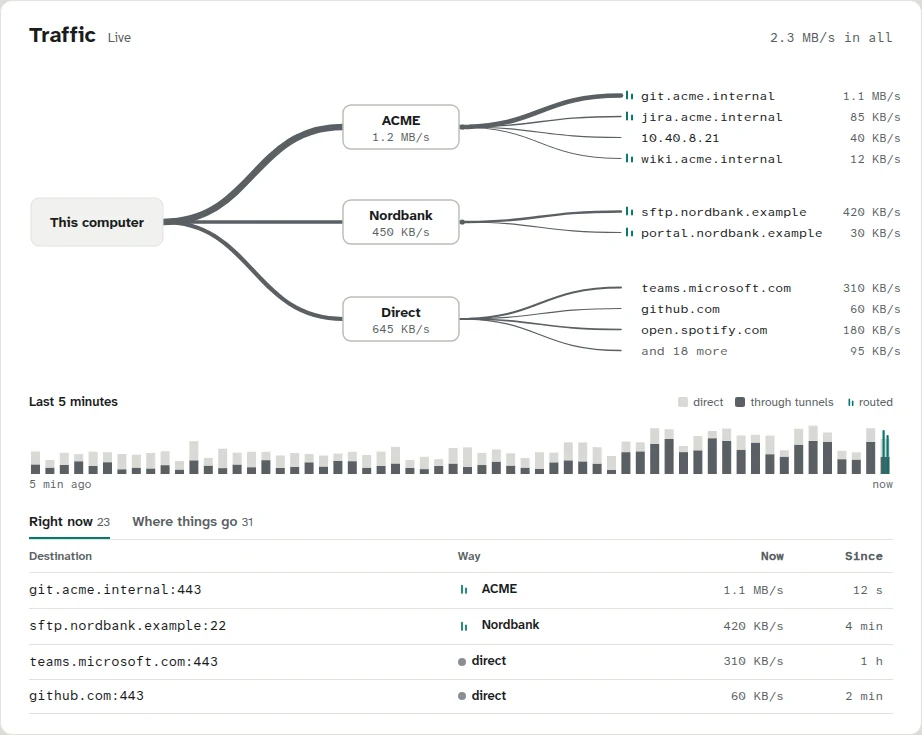
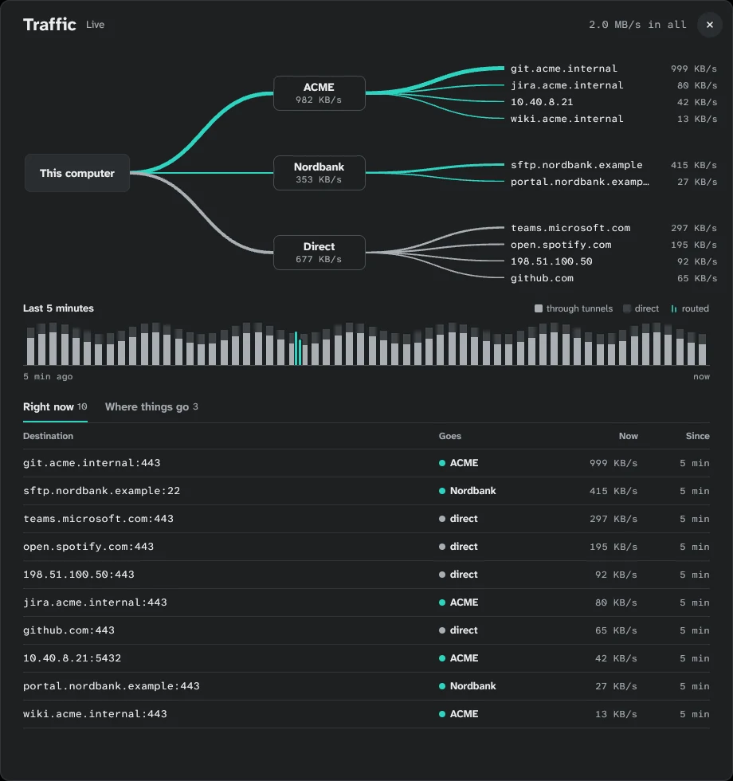
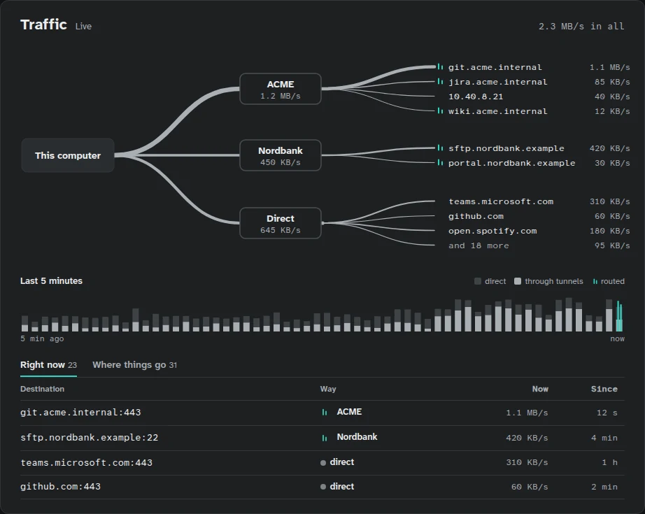
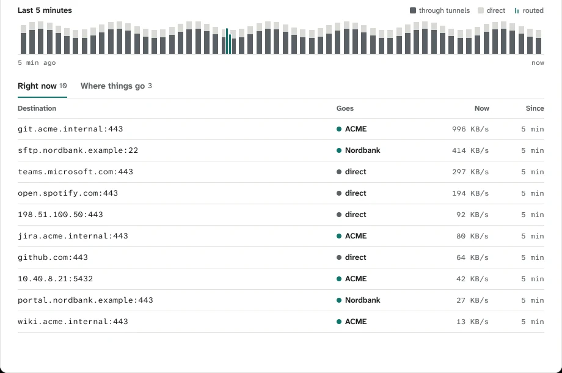
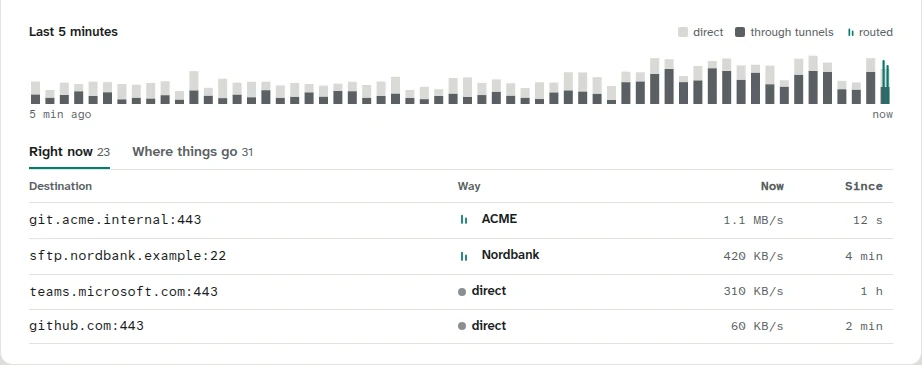
Settings → Tunnels shows two red “Remove…” buttons with trash icons on an idle list, and Privacy a red “Clear log…”. They are faithful to the approved proposal (settings-tunnels.html draws Remove… in danger), so this changes the rule, not the app: red at rest means something is wrong; a destructive action shows its colour when pointed at and in the confirm step it already has. After: muted bordered buttons until then.
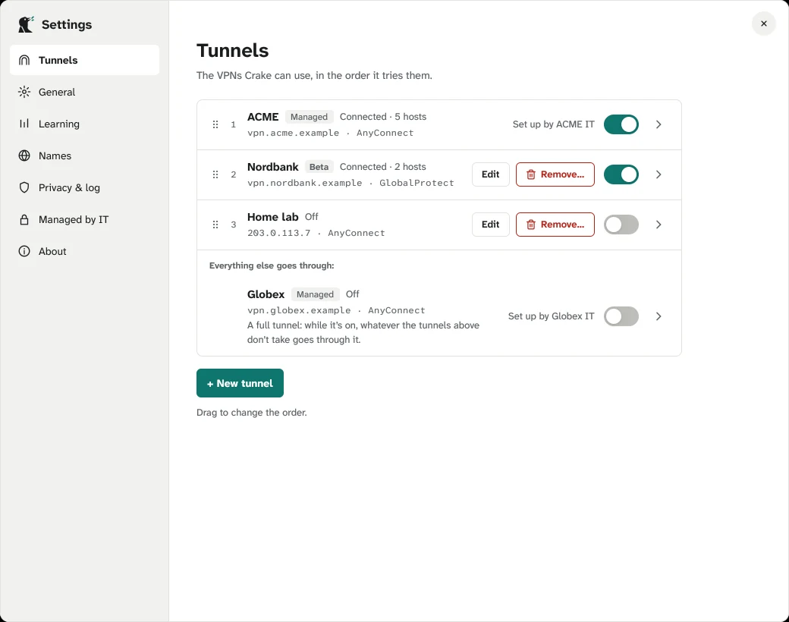
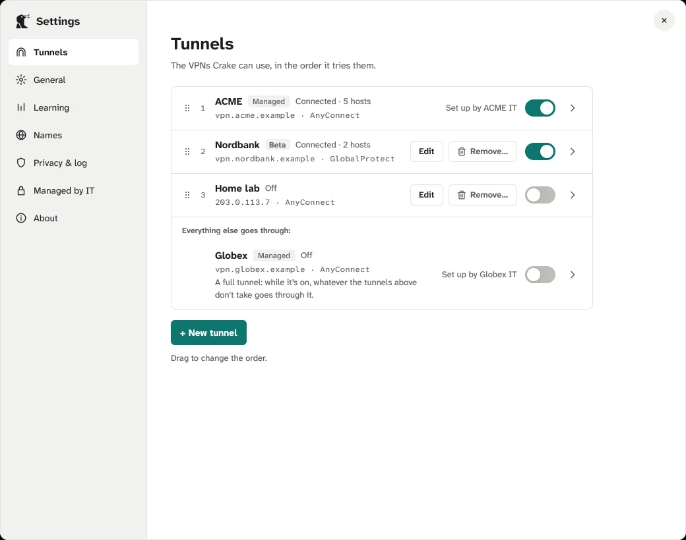
Pin and Forget became bare bold text, as heavy as the host name; the screen has quiet bordered buttons. The screen also right-aligns the last-used column and shows a time on the pinned row too, where the app shows a dash. And “Disconnect” in the title row becomes “Switch off”, the word every other place uses.
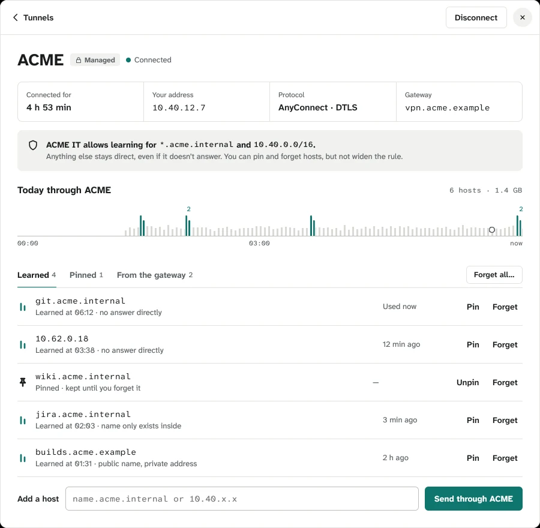
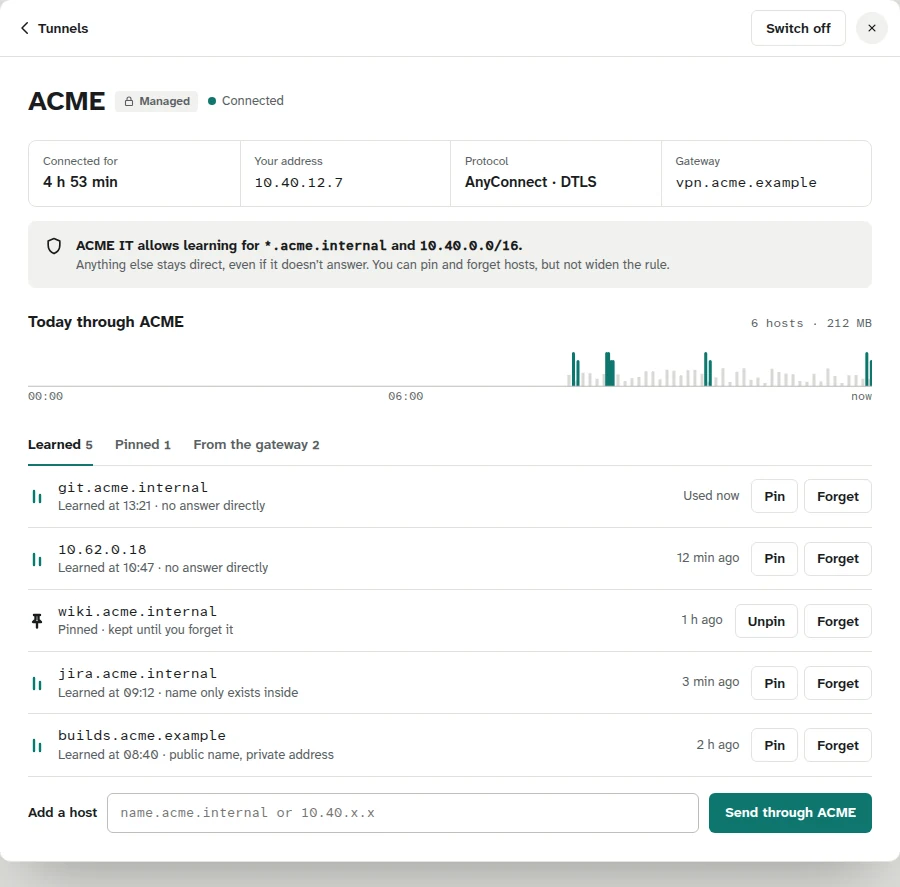
A day with nothing to say says it three times: “0 hosts routed, 0 left alone, 0 undone”, then the chart, then “Nothing matches today”, which implies a filter while Everything is chosen. After: the chart stays (it is the day’s traffic, and the only place to see it) and one line under it: “Nothing to tell today. No host needed a decision.” (not “everything went direct”, which the log can’t vouch for with a full tunnel on). Also: no chip for a host left alone (a badge holding a dash said nothing), and the zoom hint only while the pointer is over the chart. The chosen filter stays teal: a chosen state.
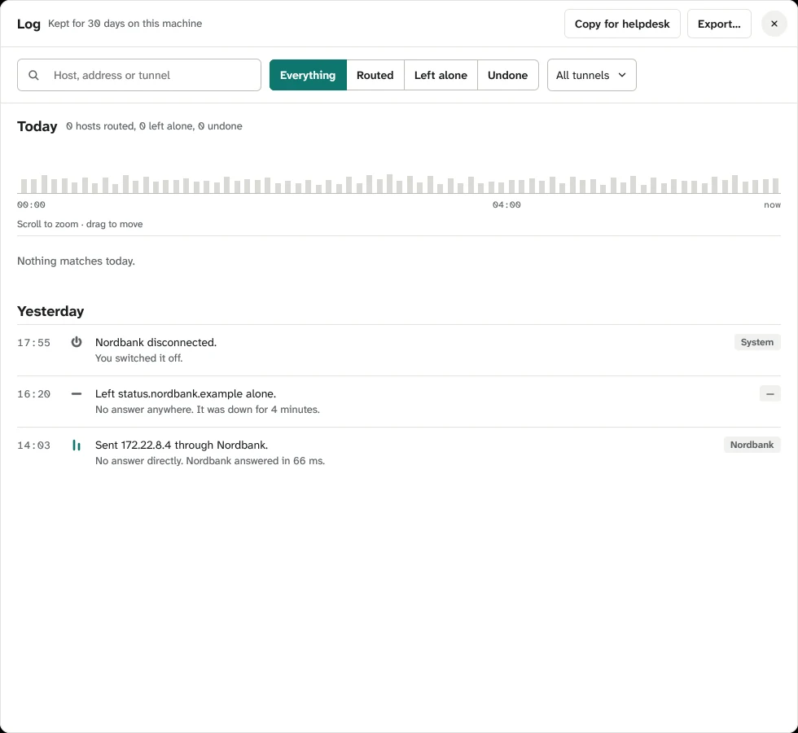
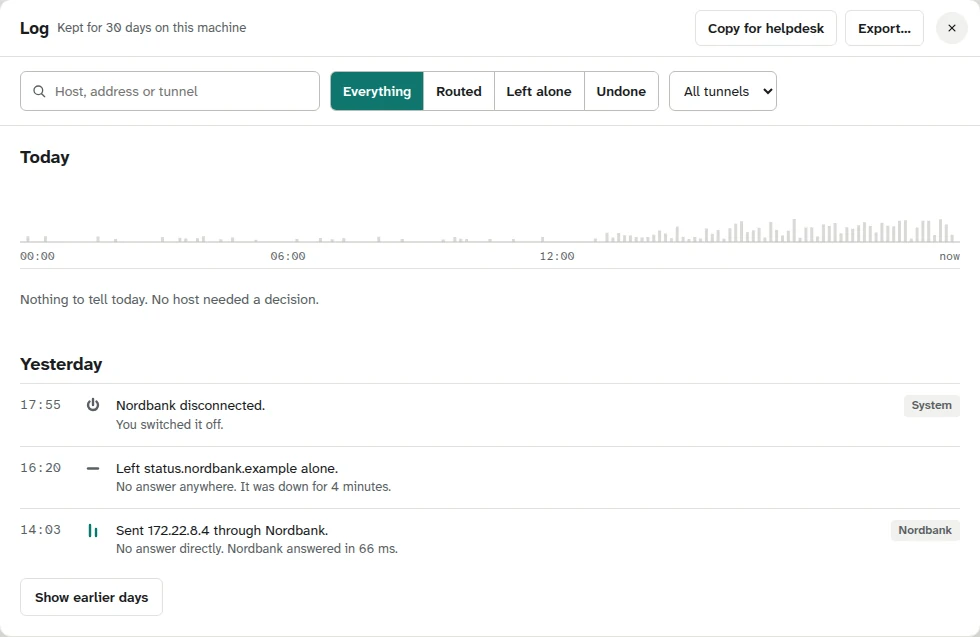
It is teal text; the leftover notice’s “Got it” is a bordered button on the command’s line (your choice, A2, 2026-10-15, which stays), the no-tray note has a bordered action and a muted “Not now”. After: the AnyConnect notice gets the same bordered button; an acknowledgement is never teal. New notices follow the no-tray note’s shape: a title at 600, a body, an actions row with a bordered action and a muted text dismiss.
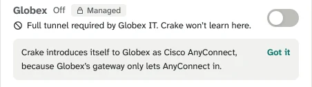
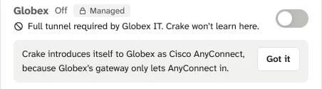
With a tunnel stopped the header reads “● Trouble” with a grey dot while the bird wears its red badge and the row says “Session expired” in red. After: the dot in danger.
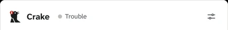
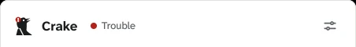
A “?” after every row in General and Learning marks nothing. Keep it where its card says more than the line under the title: General’s Show the bird (the legend of the bird’s looks) and When Crake routes a host; Learning’s Wait for a direct answer, When two tunnels answer and Forget hosts unused for (its card holds the rule that a host used today isn’t forgotten seven days after it was learned); Names’ and Privacy’s all stay (each explains a DNS or privacy behaviour the line can’t). Drop it on Start when you log in, Switch on the tunnels you left on, Tell me when there’s a new version, Never send through a tunnel.
The app shows the gateway’s raw field name: “ACME asks: GROUP”. The screen says it the other way, “Nordbank asks for a code”, with the gateway’s own words quoted under it. After: the same, from a small table of the field names gateways use; a name not in it keeps today’s quoted form.
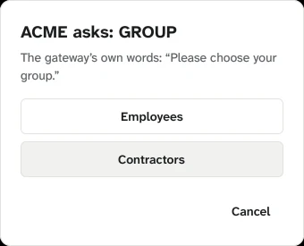
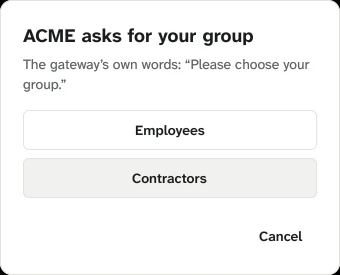
| Field | Crake says |
|---|---|
| group | ACME asks for your group |
| username | ACME asks for your username |
| password | ACME asks for your password |
| passcode, OTP, token, code | ACME asks for a code |
| second password | ACME asks for your second password |
| PIN | ACME asks for your PIN |
| anything else | ACME asks: NAME (as today) |
Light amber decide: warning #E39A1B measures 2.4:1 on the panel, under the 3:1 for a mark. Where it is drawn that matters only at the triangle’s edge, where it leaves the bird’s ink head onto the panel or the notice’s tint. Two values that pass, beside today’s, on both backgrounds; #BF7E12 keeps more of the amber. Dark keeps #F5B740 (9.1:1); the tint and hairline tokens don’t change.
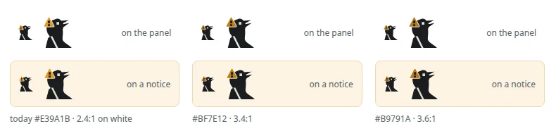
The screens agree with each other: the title row starts 20 px from the left, its hairline sits at 56. The app’s windows start at 20, 22, 24, 22, 25, 23 and 29 (Traffic, drawn from a proposal, is the odd one). After: 20 and 56 everywhere, the same × in the same corner; a window then differs only in its actions.
| Where | Today | After |
|---|---|---|
| Panel, log, detail | “answered in 38 / ms.” can break between number and unit | a non-breaking space between every number and its unit |
| New tunnel, step 2 | “Opens in your default browser.” under the Stay signed in box | in the “In your browser” card, or gone: the card says it |
| New tunnel, step 1 | “Found a Cisco AnyConnect gateway” with the two-stroke tick | a muted check: the tick means routed |
| Tunnel detail | “Disconnect” | “Switch off” |
| Traffic | “Goes” | “Way” |
| Traffic, demo data | “Since” says “5 min” on every row | real times in the demo (the column stays in both tabs) |
| Log, empty day | “0 hosts routed, 0 left alone, 0 undone” · “Nothing matches today.” | “Nothing to tell today. No host needed a decision.” |